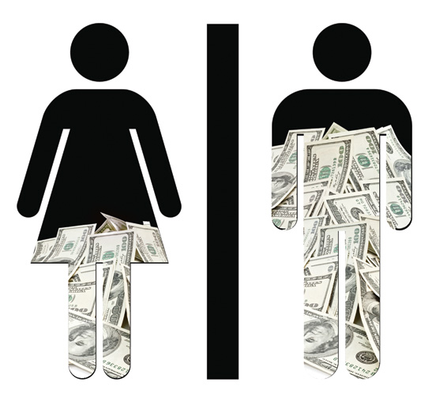

Lecture 16: Experimental Design
STAT 20 UC Berkeley
First Things First
First Things First
What to expect from lab this week:
Wednesday: Finshing Question 2 (Performing Experiment)
- Lab on Wednesday will be held outside Evans Hall on the side facing San Francisco
Thursday: Finishing Question 3
First Things First
More on lab tomorrow:
You will be conducting the experiments you devised in Question 1 of your labs
Materials will be provided for you (you do not have to bring anything!)
Once you feel you are done running your experiment, you may leave
First Things First
- On lab this week:
First Things First
- Quiz 1 grades will be released at the latest by Sunday, July 31 at 11:59pm.
Recap
Example: Poverty and Graduation
- Consider the following question:
What is the relationship between poverty rate and high school graduation rate when looking at the 50 US states?
Example: Poverty and Graduation
- Takeaway: Poverty is negatively associated with graduation.
Example: Sex Discrimination Case
Question: Are females unfairly discriminated against in promotion decisions?
- 48 male supervisors given the same personnel file.
- Files were randomly assigned to the supervisors.
- Asked: promote or not.
- Files were identical except gender.
Example: Sex Discrimination Case
| Gender | promote | nopromote |
|---|---|---|
| Male | 21 | 3 |
| Female | 14 | 10 |
\[\textrm{Prop. males that are promoted} = 21/24 = 0.875 \\ \textrm{Prop. females that are promoted} = 14/24 = 0.583\]
Was there a relationship between promotion and gender given the evidence we had?
Gender discrimination: Hypothesis test step 1
What was the null hypothesis?
\(H_0\): There is no gender discrimination
Alternatively:
\(H_0\): Gender and promotion are independent
Gender discrimination: Hypothesis test step 2
What was the alternative hypothesis?
\(H_A\): There is gender discrimination
Alternatively:
\(H_A\): Gender and promotion are not independent
Gender discrimination: Hypothesis test step 3
What is our test statistic?
We considered the difference in the proportion of males promoted and the proportion of females promoted. Mathematically, this was:
\(d = \hat{p}_{M} - \hat{p}_{F} = .29\)
Gender discrimination: Hypothesis test step 4
- We constructed the null distribution of our test statistic via a simulation.
Simulation using infer
Evaluating our results:
- Obtaining a two-sided p-value:
# A tibble: 1 × 1
p_value
<dbl>
1 0.0472- Takeaway (for many viable significance levels \(\alpha\)): Gender is not independent of promotion status… or can we say more?
Every data set has a story.
Causation in terms of counterfactual
Counterfactual: relating to or expressing what has not happened or is not the case.
We say “A causes B” if, in the world where A didn’t happen, B no longer happens.
Causation in terms of counterfactual

Potential Outcomes: The outcomes that could be realized for a unit upon each possible level of the treatment.
- The outcome of taking the left path.
- The outcome of taking the right path.
Only one of these are observed.
Drawing: Maayan Harel
Counterfactual - Exercise
I got a good grade because I studied for the test.
- Construct two rows of a dataframe that could help prove or disprove this statement: One that represents an observation that would support the above claim, and another that represents the counterfactual we would need to see to determine that the claim is true.
Estimating Causal Effects - The Challenge of Causation
Counterfactuals have a particularly problematic relationship with data because data are, by definition, facts. -Judea Pearl
Experimental Design
Desinging a “causal” study/experiment
Draw a sample from a population.
Either conduct an observational study or an experiment.
Observational Study
Observational Study: researchers collect data from sample in a way that does not interfere with how they arise. Why do an observational study?
easier/cheaper
study historical data
ethical
Observational Study
While causal claims often are (and sometimes must be) made using observational studies, they do not establish causality.
This is because they do not account for confounding variables, which are those variables associated with both the supposed explanatory variable A and the response variable B.
Observational Study - Exercise
Consider three variables:
Use of sunscreen
Time spent at the beach
Getting skin cancer
Identify Variable A, Variable B, and a confounding variable that may impact a possible causal relationship between A and B.
Experiment
Experiment: Researchers assign subjects to treatments, then collect the resulting data.
How might experiments help establish causation?
- PollEverywhere excercise
Principles of Experimental Design
Replication: Within a study, replicate by collecting a sufficiently large sample. Or replicate the entire study.
Control: Compare treatment of interest to a control group that isolates the effect of interest (this group does not receive the treatment).
Blinding: When experimental units do not know whether they are in the control or treatment group
Principles of Experimental Design
Blocking: For those most obvious confounders, split subjects into groups (or blocks) for each level of the confounder and then randomly assign subjects within each block to treatment and control groups. Perform the experiment on each block.
Random Assignment: Randomly assign subjects to treatments.
The Motivation Behind Random Assignment - Exercise
Which of the following is true about random assignment?:
It ensures our sample is representative of our population.
It removes the effect of the subject knowing the treatment group to which they were assigned.
It increases the sample size.
It ensures that, on average, every possible confounding variable should be balanced between the treatment and control groups.
Other Experimental Design Concepts
Double-Blinding: When neither the experimental units nor the researchers know the assignment of treatments.
Placebo: A fake treatment (such as a sugar pill), often used as the control group for medical studies.
Placebo effect: Experimental units showing improvement simply because they believe they are receiving a special treatment.
Strategy I: Look across time
Can we compare two states of the same unit (person) at different times?
A time I took the blue route and the gray route?
A time I took and did not take aspirin?
When the woman graduated and did not graduate from Cal?
Strategy II: Look across units
Can we compare two units (people) at the same time?
When I took the blue route and you took the gray route?
When I took aspirin and you did not?
When the woman graduated from Cal and her friend did not?
Experimental Strategies
Strategy I: Look across time
In this case, we have one subject with a “Before” observation and an “After” observation, where “Before”/“After” suggests that some time has passed
We consider these “Before” and “After” observations to be dependent.
This type of data is also called matched pairs.
We perform some calculation on each pair of observations and then create a summary statistic from the results of each calculation to be our test statistic.
Strategy I: Look across time
Methods for testing the results of these experiments are (mostly) beyond the scope of the material this summer
We do know how to test the results when the test statistic is one proportion
Strategy II: Look across units
In this case, we have multiple subjects belonging to two different groups: often a treatment and a control.
- In some cases, we do not view one group as a treatment and another as a control (think male and female groups for the sex discrimination case).
These subjects might feasibly perform the experiment at the same time under their group. Each subject has one observation.
We calculate a statistic to summarise the results of each group and then performing a differencing (subtracting) operation to obtain our test statistic.
Strategy II: Look across units
- The permutation test is a common method that can be used to test the results of these experiments.
Experimental Strategies
- At this point, we went to the board to discuss what recorded data sets/frames might look like for experiments conducted under both strategies.
Experimental Strategies with infer
At this point, we went to the course server to discuss how to carry out testing for each experimental strategy using infer.
Break
Exercises - Case Studies
Each row will be given a sheet of paper to work on.
Case Study - Skittles
Claim: One can discern the difference between the flavor of the and Skittles when they are without their sense of smell.
Case Study - Exercise
With your row, sketch a provisional data set that would record the results of your experiment. Then, determine a null hypothesis, alternative hypothesis, and a test statistic.
Left side of the room: under Strategy I
Right side of the room: under Strategy II
Once you are done, bring your paper to the front.
Case Study - Exercise
With your row, write down how you would handle (if you feel necessary) each of the five principles of experimental design.
Left side of the room: under Strategy I
Right side of the room: under Strategy II
Case Study - Exercise
- Once your row is done with your paper, turn to face the people in adjacent rows and discuss your answers, editing them if you wish. Then pick one paper to represent both of your rows. Keep repeating this process until there is one paper to represent each side of the room. Then bring these papers to the front of the room.
End of Lecture 16